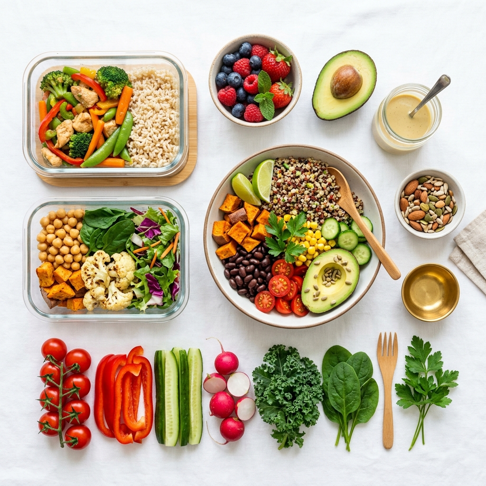

Guía de alimentación antiinflamatoria para el día a día

La inflamación de bajo grado puede ser causada por estrés, falta de sueño y dietas ricas en ultraprocesados. Adoptar un patrón alimenticio rico en antioxidantes ayuda a prevenir problemas de salud a largo plazo.
1. ¿En qué consiste un patrón antiinflamatorio?
No se trata de una dieta restrictiva, sino de elegir alimentos ricos en antioxidantes, grasas saludables (Omega-3) y fibra soluble para proteger las células del daño oxidativo.
2. Alimentos claves para incluir
- Vegetales de hoja verde: Espinaca, acelga y kale.
- Frutas ricas en antioxidantes: Arándanos, frutillas y cítricos.
- Grasas saludables: Aceite de oliva extra virgen, palta y frutos secos.
- Especias naturales: Cúrcuma y jengibre fresco.
3. Alimentos a reducir
Se aconseja reducir el consumo de azúcares refinados, harinas ultraprocesadas y bebidas azucaradas.